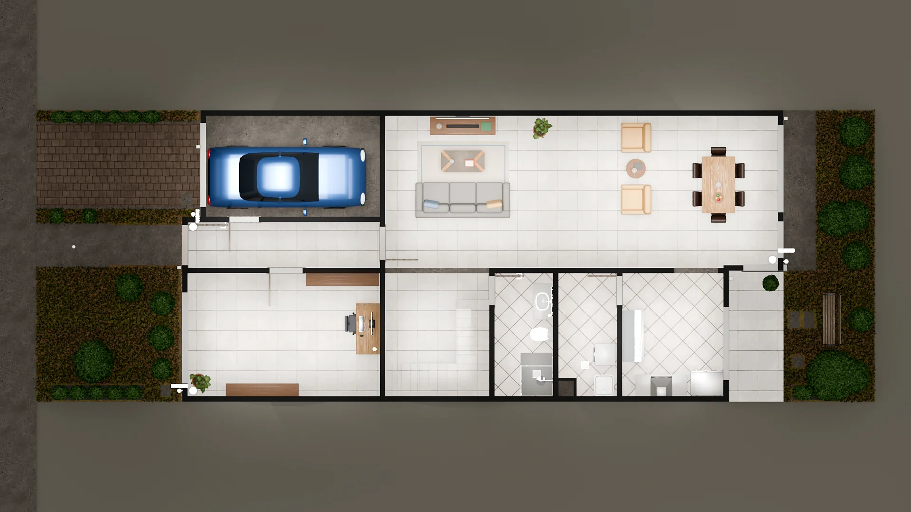
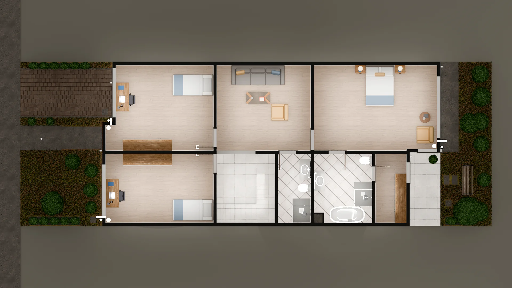
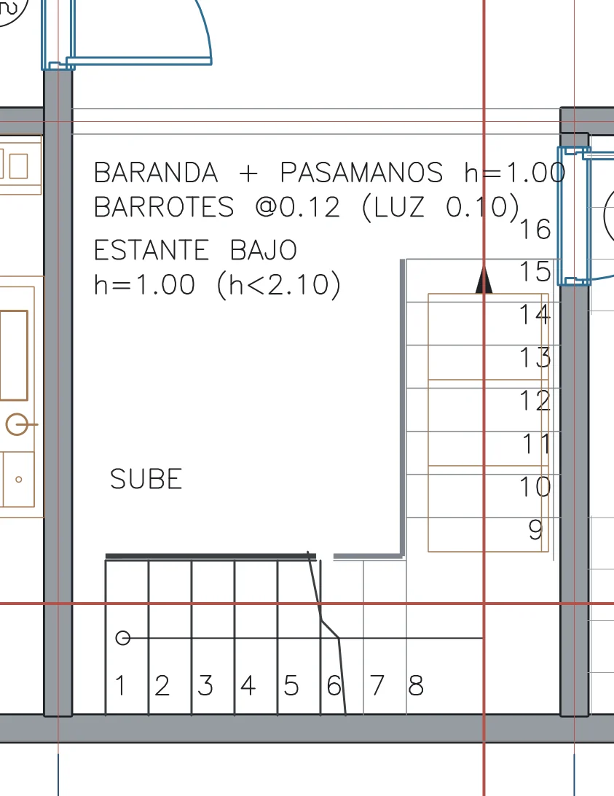

Expresión Gráfica · 2026-II
Vivienda unifamiliarde dos pisos
Universidad César Vallejo · Escuela de Ingeniería Civil · Huaraz
Grupo A1 · J. A. Alvarado H. · J. F. Arellan L. · A. D. Dominguez C. · J. Y. Quiñones R. · W. R. Sigueñas O.
Docente del curso: M.Ss. M. M. Noriega F.
Una vivienda para cuatro personas
En un lote medianero de 8.00 × 23.00 m, los espacios comunes se abren al patio y los dormitorios ocupan el segundo piso.
El hall distribuye los recorridos desde el ingreso. La escalera conduce al estar familiar y a los dormitorios.






Escalera
Escalera en L de dos tramos
- Contrapasos
- 16 × 0.175 = 2.80 m
- Pasos
- 14 × 0.25 m (7 + 7)
- Ancho libre
- 0.90 m
- Descanso
- 0.90 × 0.90 m a + 1.40
- Altura libre
- 2.775 m
- Protecciones
- Baranda y pasamanos h = 1.00 m · barrotes @ 0.12 m
En la llegada al segundo piso, el paso libre se reduce a 0.725 m.



Modelo 3D
Del plano al volumen
El corte fugado muestra cómo se conectan los dos niveles por la escalera.
Para las medidas y las protecciones de la escalera, consulta la lámina A-01.
Ambientes amoblados
Ambientes interiores


Conclusiones arquitectónicas
- El primer piso reúne las áreas sociales y de servicio. La sala-comedor se abre al jardín posterior.
- La escalera conecta el ingreso con el estar familiar, que distribuye los dormitorios.
- Las plantas, los cortes y las elevaciones explican la distribución. El modelo 3D muestra cómo se relacionan los espacios en volumen.